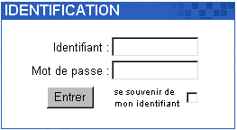

| Pour vous connecter à Open Webmail, ouvrez une fenêtre de
navigateur
, comme
Internet Explorer
et tapez l'URL (
Uniform Resource Locator
) permettant de rejoindre votre plate-forme Open Webmail dans la barre d'adresse. Par exemple, si votre adresse de site web est www.forceinfo.net, votre accès à Open Webmail sera www.forceinfo.net/webmail ou www.forceinfo.net/openwebmail. Cependant, ceci n'est pas nécessairement vrai dans toutes les situations. Si vous ne pouvez pas identifier votre procédure de connexion à Open Webmail, contactez votre
administrateur système
pour l'aide appropriée.
(Exemple: http://www.pdcweb.net/webmail ou http://www.pdcweb.net/openwebmail)
Une fois que vous aurez accès à votre plate-forme Open Webmail, vous serez accueilli avec un écrande connexion (IDENTIFICATION) similaire à l'exemple ci-après:
|
 | Saisissez votre Identifiant (ou nom d'utilisateur) dans le champ texte à coté de Identifiant :, et votre mot de passe dans le champ texte à coté de Mot de passe :.
Note: Votre nom d'utilisateur n'est pas nécessairement le même que celui de votre adresse E-mail.Si vous ne connaissez pas votre nom d'utilisateur, contactez votre administrateur système. |
Sur le
Réseau PDCweb
votre adresse E-mail, nom d'utilisateur, et alias sont tous des identifiants utilisateur valides.
Exemple:
| Domaine: | www.muppetshow.com |
| E-mail: | bunson@muppetshow.com |
| Identifiant: | bhoneydew |
| Mot de passe: | Burner |
Cet utilisateur peut se connecter à son compte Open Webmail avec l'identifiant bunson ou bhoneydew.
Si vous le souhaitez, vous pouvez cocher la case "se souvenir de mon identifiant", et votre identifiantsera automatiquement réaffiché lors de votre prochaine connexion à Open Webmail. Seule la saisie de votre mot de passe sera requise.
Une fois que vous aurez saisi ces deux champs, il suffira de cliquer sur "Entrer", oude presser la touche "Entrée" au clavier. Si vos codes sont corrects, vous serez dirigé vers votre boîte de réception de messages.
S'il s'agit de votre première connexion à Open Webmail,vous serez invité à effectuer vos réglages personnels. Consultez pour cela
Configuration des réglages de base
. Si vous avez déjà effectué cette étape, consultez directement
Utiliser votre boîte de réception
. |